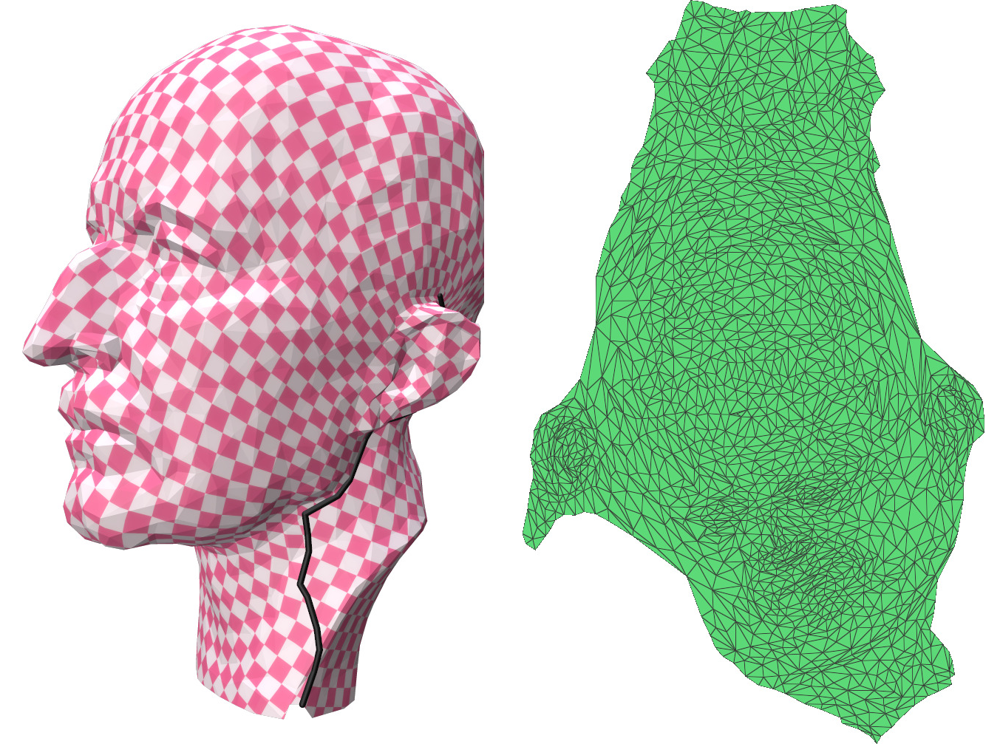
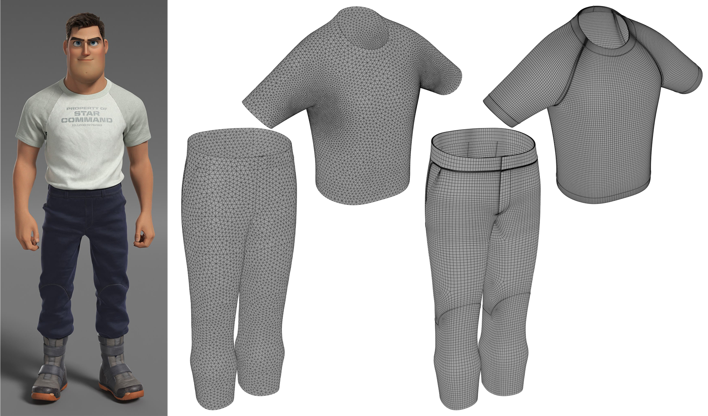
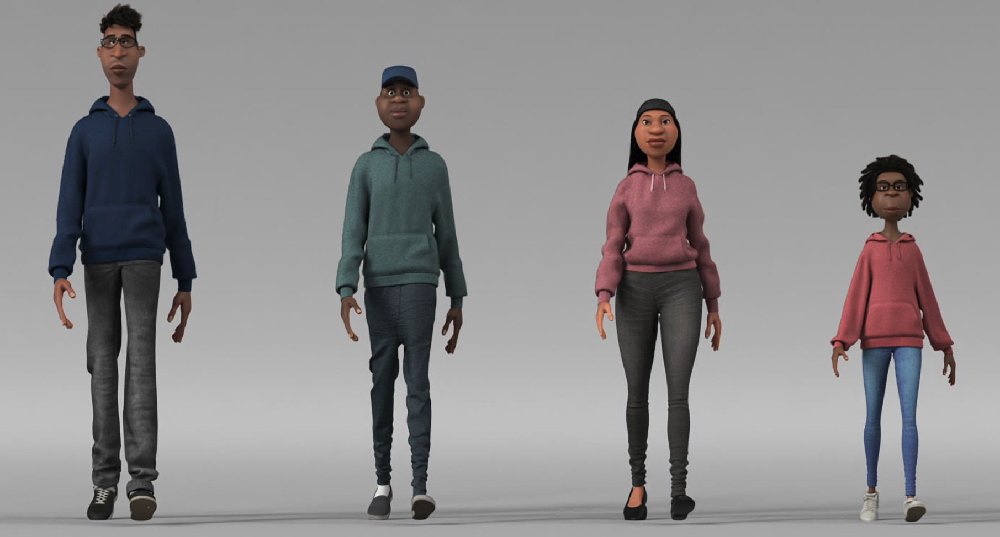

Publications
Shaping the Elements: Curvenet Animation Controls in Pixar's Elemental
SIGGRAPH Talks (2023)

A Procedural Approach for Stylized Bark Shading
SIGGRAPH Talks (2023)
Elemental Characters: Bringing Water to Life
SIGGRAPH Talks (2023)
Somigliana Coordinates: an elasticity-derived approach for cage deformation
SIGGRAPH Conference Track (2023)
 Joint optimization of distortion and cut location for mesh parameterization using an Ambrosio-Tortorelli functional
GMP / Computer-Aided Geometric Design (2023)
 Revamping the Cloth Tailoring Pipeline at Pixar
SIGGRAPH Talks (2022)
Hair Emoting with Style Guides in Turning Red
SIGGRAPH Talks (2022)
Character Articulation through Profile Curves
SIGGRAPH / ACM Transactions on Graphics (2022)
Nominated for the 21st VES AwardsThe Power Particle-In-Cell Method
SIGGRAPH / ACM Transactions on Graphics (2022)
FaceBaker: Baking Character Facial Rigs with Machine Learning
SIGGRAPH Talks (2020)
 Garment Refitting for Digital Characters
SIGGRAPH Talks (2020)
Sculpt Processing for Character Rigging
SIGGRAPH Talks (2020)
Discrete Differential Operators on Polygonal Meshes
SIGGRAPH / ACM Transactions on Graphics (2020)

Sharp Kelvinlets: Elastic Deformations with Cusps and Localized Falloffs
DigiPro (2019)
Mesh Wrap based on Affine-Invariant Coordinates
SIGGRAPH Talks (2019)
Anisotropic Elasticity for Inversion-Safety and Element Rehabilitation
SIGGRAPH / ACM Transactions on Graphics (2019)
Analytic Eigensystems for Isotropic Distortion Energies
ACM Transactions on Graphics (2019)

Patch-based Surface Relaxation
SIGGRAPH Talks (2018)
Automating the Handmade: Shading Thousands of Garments for Coco
SIGGRAPH Talks (2018)

Dynamic Kelvinlets: Secondary Motions based on Fundamental Solutions of Elastodynamics
SIGGRAPH / ACM Transactions on Graphics (2018)
Stable Neo-Hookean Flesh Simulation
ACM Transactions on Graphics (2018)

Regularized Kelvinlets: Sculpting Brushes based on Fundamental Solutions of Elasticity
SIGGRAPH / ACM Transactions on Graphics (2017)
Optimal Voronoi Tessellations with Hessian-based Anisotropy
SIGGRAPH Asia / ACM Transactions on Graphics (2016)

Subdivision Exterior Calculus for Geometry Processing
SIGGRAPH / ACM Transactions on Graphics (2016)

Vector Field Processing on Triangle Meshes
SIGGRAPH Courses (2016)

Discrete connection and covariant derivative for vector field analysis and design
ACM Transactions on Graphics (2016)

Vector Field Processing on Triangle Meshes
SIGGRAPH Asia Courses (2015)
Convolutional Wasserstein Distances: Efficient Optimal Transportation on Geometric Domains
SIGGRAPH / ACM Transactions on Graphics (2015)

Power Particles: An incompressible fluid solver based on power diagrams
SIGGRAPH / ACM Transactions on Graphics (2015)

Discrete 2-Tensor Fields on Triangulations
SGP / Computer Graphics Forum (2014)
Geometric Discretization through Primal-Dual Meshes
Caltech PhD thesis (2014)

Space-Time Editing of Elastic Motion through Material Optimization and Reduction
SIGGRAPH / ACM Transactions on Graphics (2014)

Fast Tile-Based Adaptive Sampling with User-Specified Fourier Spectra
SIGGRAPH / ACM Transactions on Graphics (2014)

Weighted Triangulations for Geometry Processing
ACM Transactions on Graphics (2014)

The Power of Orthogonal Duals
Mathematical Progress in Expressive Image Synthesis I (2014)
On the Equilibrium of Simplicial Masonry Structures
SIGGRAPH / ACM Transactions on Graphics (2013)

Geometry Processing with Discrete Exterior Calculus
SIGGRAPH Courses (2013)

Feature-Preserving Surface Reconstruction and Simplification from Defect-laden Point Sets
Journal of Mathematical Imaging and Vision (2013)

Blue Noise through Optimal Transport
SIGGRAPH Asia / ACM Transactions on Graphics (2012)

HOT: Hodge-Optimized Triangulations
SIGGRAPH / ACM Transactions on Graphics (2011)
-
An optimal transport approach to robust reconstruction and simplification of 2D shapes
SGP / Computer Graphics Forum (2011)
Exoskeleton: Curve Network Abstraction for 3D Shapes
Computer & Graphics (2011)

Trivial Connections on Discrete Surfaces Revisited: A Simplified Algorithm for Simply-Connected Surfaces
Technical Report (2010)
Signing the Unsigned: Robust Surface Reconstruction from Raw Pointsets
SGP / Computer Graphics Forum (2010)

Spectral Surface Analysis and Applications in Computer Graphics
Unicamp MSc thesis (2009)

A Hierarchical Segmentation of Articulated Bodies
SGP / Computer Graphics Forum (2008)

A Simple and Flexible Framework to Adapt Dynamic Meshes
Computer & Graphics (2008)

Adapted Dynamic Meshes for Deformable Surfaces
SIBGRAPI (2006)